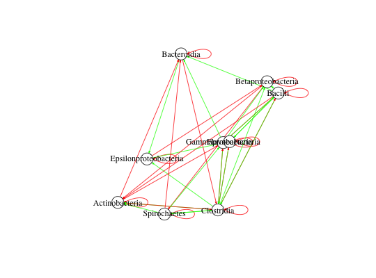

Assign OTU identifiers or higher-level taxon names to an interaction matrix
assignTaxonLevelsToA(A, data = NULL, metadata = NULL, lineages, type = "", taxon.level = "genus", pos.only = FALSE, neg.only = FALSE, uniqueNames = FALSE, higherLevelNames = TRUE, no.merge = FALSE)
| A | an interaction matrix |
|---|---|
| data | (optional) a matrix with taxon abundances, rows are taxa and columns are samples (only needed if type is non-empty) |
| metadata | (optional) a matrix with metadata, samples match samples in OTU table (only needed if type is non-empty) |
| lineages | a matrix with lineages, for the format please see data david_stool_lineages |
| type | if non-empty, process data exactly as in method generateTS, supported: stoola and stoolb |
| taxon.level | the taxon level to be assigned as row and column names, supported: otu, species, genus, family, order, class, phylum |
| pos.only | merge only positive entries such that final interaction matrix only contains positive entries (not carried out if uniqueNames is TRUE) |
| neg.only | merge only negative entries such that final interaction matrix only contains negative entries (not carried out if uniqueNames is TRUE) |
| uniqueNames | make names unique by appending a counter if needed (prevents merging of entries belonging to the same taxon) |
| higherLevelNames | if given level is not known, assign the highest level that is known |
| no.merge | suppress merging (in this case, taxon names are returned in a separate column of the matrix, not as row and column names) |
By default, interactions will be merged to the given higher-level taxon level by adding 1 for a positive entry and subtracting 1 for a negative entry. If only positive or only negative entries are merged, the sum of positive or negative entries will be returned. If uniqueNames is set to TRUE, merging is not carried out. Merging can also be suppressed with option no.merge. In this case, since non-unique row and column names are not allowed, taxon names are returned as a separate column in the interaction matrix.
data("david_stool_lineages") # make a random OTU interaction matrix as an example N=30 A=generateA(N=N,c=0.1)#> [1] "Adjusting connectance to 0.1" #> [1] "Initial edge number 900" #> [1] "Initial connectance 1" #> [1] "Number of edges removed 783" #> [1] "Final connectance 0.1" #> [1] "Final connectance: 0.1"randomOTUIndices=sample(1:nrow(david_stool_lineages))[1:N] rownames(A)=david_stool_lineages[randomOTUIndices,1] colnames(A)=rownames(A) Aclass=assignTaxonLevelsToA(A,lineages=david_stool_lineages, taxon.level="class")#> [1] "Initial edge number 147" #> [1] "Initial connectance 0.125671321160043" #> [1] "Final connectance: 0.444444444444444"#> [1] "Largest value: 3" #> [1] "Smallest value: -11" #> [1] "Initial edge number 41" #> [1] "Initial connectance 0.444444444444444" #> [1] "Final connectance: 0.444444444444444"